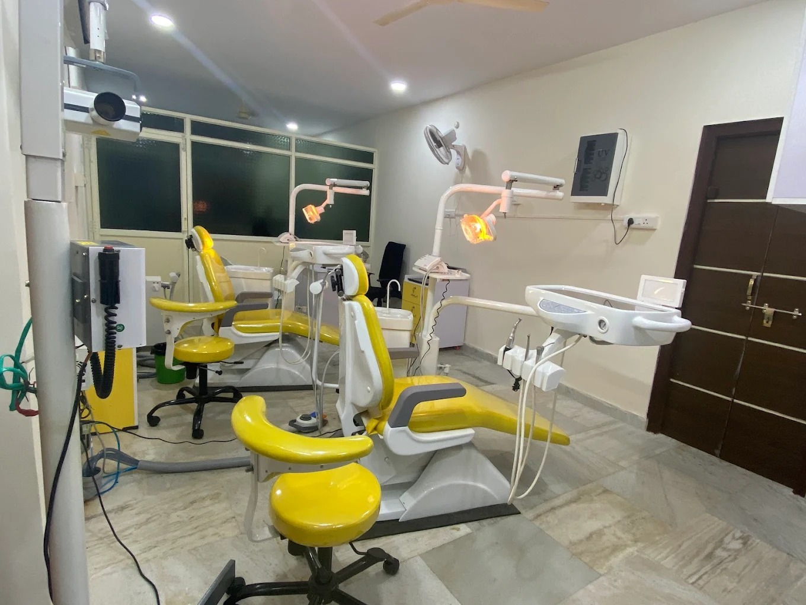

Super Speciality Dental Clinic
MDS specialist-led care with accurate diagnosis, painless procedures, and modern technology — at Vijayawada's trusted super speciality dental centre.
Specialist Dental Surgeon
Highly qualified MDS specialist with extensive experience in advanced dental procedures.
Specialist Dental Surgeon
Experienced MDS specialist focused on cosmetic and preventive dentistry.

Call or WhatsApp us anytime from 9 AM – 9 PM.
Eluru Road, Gunadala
089855 74111
Chittinagar, KT Road
8985574222